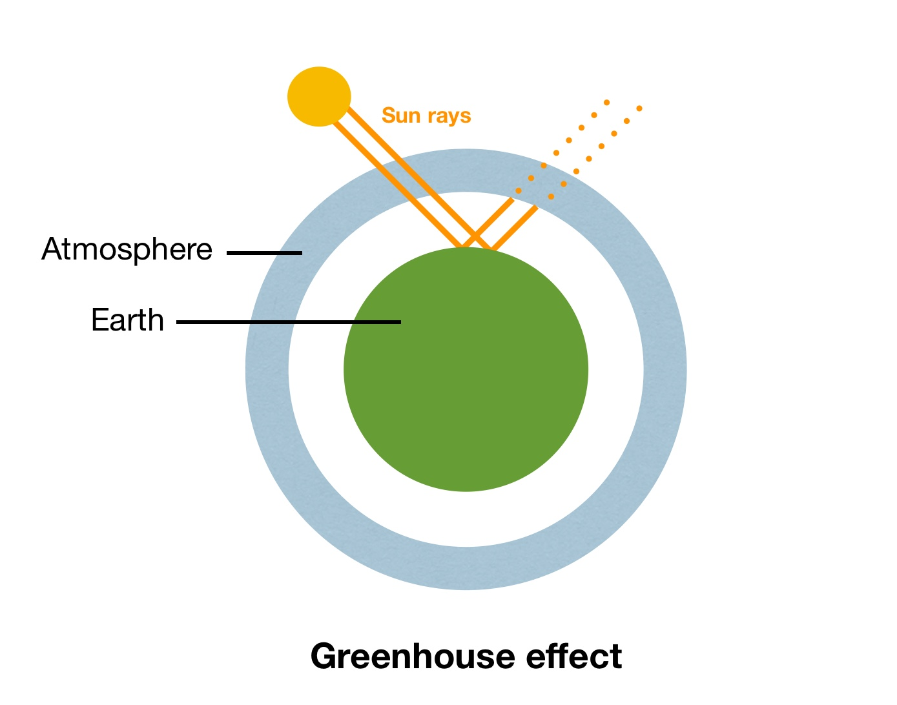

Greenhouse gases are gases that trap heat in the Earth’s atmosphere, contributing to the “greenhouse effect” which leads to global warming. They do this by absorbing sunlight that bounces back off the Earth, trapping this heat close to the planet instead of it being reflected back into space.

GHGs include carbon dioxide (CO2), methane (CH4), nitrous oxide (N2O), and fluorinated gases (or F-gases).
Natural sources: decomposition of organic matter, wetlands (methane), respiration, and soils.
Human activity: Burning fossil fuels is the largest contributor.
Its main concern is contribution to climate change, which may radically change our planet’s environment, dangerous for human life.